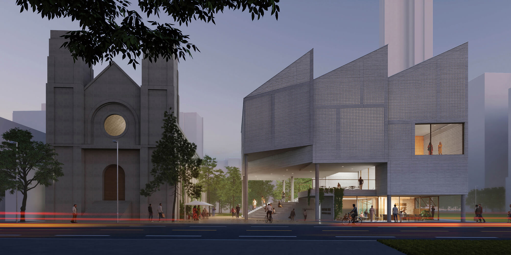
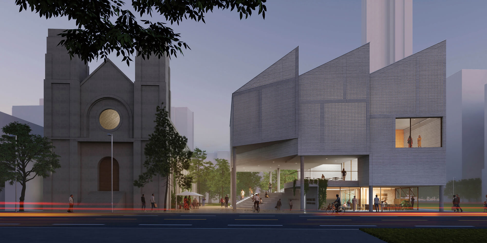

-
项目名称：汉阳印记公园社区中心
Project Name: Community Center of Hanyang Memory Park面积：5801 平方米
Area: 5801 sqm地址：武汉，湖北
Location: Wuhan, Hubei, China设计年份： 2022年
Year: 2022团队角色：景观及规划顾问
Role: Landscape and Planning Consultant项目状态：方案
Status: Schematic Design获奖：
香港建筑师学会海峡两岸暨港澳建筑设计大奖 银奖，香港，2024
Perspective A&D 透视设计大奖，香港，2023
美国建筑师学会香港分会年度大奖入围，2022Awards:
Silver Award, HKIA Cross-Strait Architectural Design Awards, Hong Kong, 2024
Perspective A&D Awards 2023, Hong Kong, 2023
AIA Hong Kong Awards Shortlist, 2022合作单位：苏畅设计研究室，中天世纪工程技术有限公司
Collaborators: Su Chang Design Research Office, ZCET项目介绍：
设计从汉阳古城空间与自然地理环境的关系出发，把汉阳树公园打造成重塑汉阳城市记忆的微型山水城市空间。设计考虑北园桂芳巷与南园东南高地三槐岭旧址的关系，通过复合的上、下地面层斜向引入连续街巷空间贯连南北，与首层大台阶及天主堂西南公共空间汇合，成为社区重要的城市客厅空间。建筑造型与立面材质强调城市的历史空间记忆：上部起伏屋面衬托天主堂形态；立面镂空混凝土挂板呼应场地原有的砖砌建筑立面肌理。
考虑武汉的亚热带季风气候，首二层架空空间从汉阳树公园引入自然风，并通过垂直中庭拔风，加强三四层对流。内部公共空间设计为半户外过廊与平台，夏天可向四周重要城市空间开放，供市民眺望公园风景与汉阳远山。下部开放地面层吸引人流，小体量商业空间与半户外平台结合，将地面层与公园景观连贯起来，成为历史街区与城市景观的交汇处。从汉阳古城记忆出发，保留街巷印迹，重塑人文古城与自然、公共空间与文脉的关系。Introduction:
Our design proposes a spatial anchor for an urban park in Hanyang old town and forms an architectural dialogue between the city’s natural geography and built heritage. On the lower ground floor, the building’s massing is elevated to carve a diagonal connection between the sites of the historical alleyway and heritage church building. A generous staircase leads the visitors from the covered public plaza towards urban decks on the upper ground floor, and further extends the vista towards the surrounding landscape.
Considering the sub-tropical climate of Wuhan, we devise a vertical atrium to draw the natural ventilation upward, creating a micro-climate inside the building. The pitched roof and the pre-fab concrete panels suggest the building’s tactile connection with the historical neighborhood, echoing the sensory memory of the city’s urban landscape. - 
- 